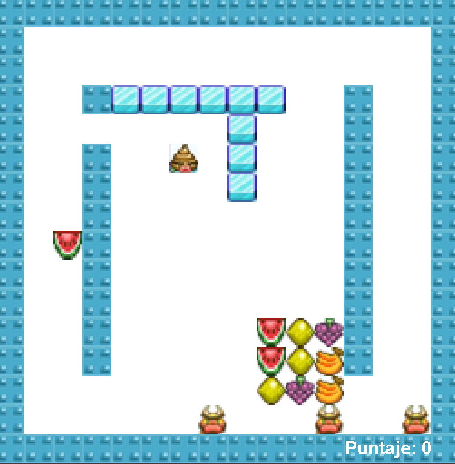
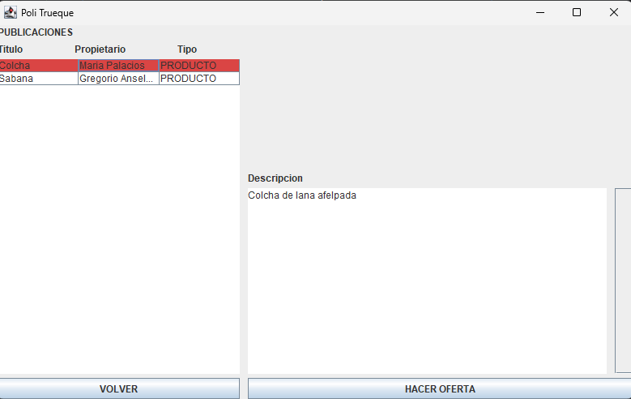
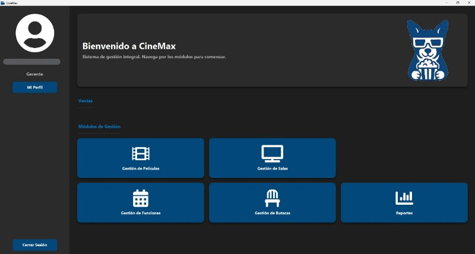
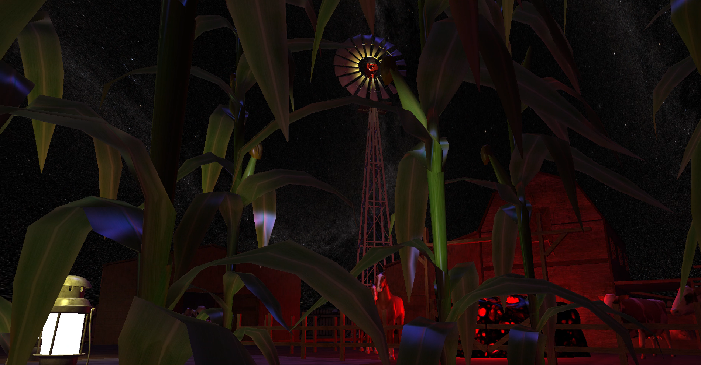
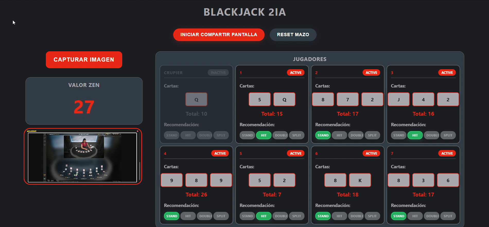

Proyectos
Recreación del juego Bad Ice Cream

Lenguaje: Java
Recreación completa del clásico juego Bad Ice Cream, desarrollada desde cero con Java.
Incluye lógica de colisiones, movimiento de personajes, generación de niveles y gestión de enemigos.
Aplicación de escritorio para intercambio de bienes y servicios

Lenguaje: Java
Desarrollo de una aplicación que permite a los usuarios ofrecer, buscar e intercambiar productos o
servicios
de forma local. Implementa una interfaz gráfica intuitiva, persistencia de datos y gestión de
usuarios.
Sistema de gestión de cine — CineMax

Lenguaje: Java | Framework: Maven
Proyecto grupal enfocado en la creación de una aplicación de escritorio para la administración de un
cine.
Incluye módulos para gestión de funciones, ventas de boletos, usuarios y generación de reportes.
Simulación de entornos virtuales — Proyecto de Computación Gráfica

Lenguaje: C++ | Librería: OpenGL
Proyecto de gráficos por computadora que recrea escenarios inspirados en libros, utilizando técnicas
de iluminación,
texturizado, movimiento de cámara y shaders personalizados.
Asistente web para juegos de Blackjack en línea (educativo)

Lenguaje: Java | Tipo: Aplicación web
Desarrollo de una aplicación web educativa que integra un motor de procesamiento de imágenes en
tiempo real
y un algoritmo de decisión para analizar partidas de Blackjack y recomendar la mejor jugada posible.